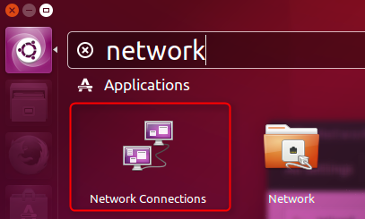
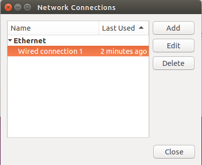

The Ethernet-over-USB example connects a computer via USB to a Cortex-M system that provides an Ethernet interface for network connectivity. The Linux Kernel provides native support for the CDC (NCM) USB Device class. This example shows how to connect a Ubuntu system via USB to an MCB1800 development board.
The following picture shows an exemplary connection of the development board (in this case a MCB1800) to a host PC.
Create the "Ethernet-over-USB" Project
Create a new project in MDK. In this example, we are using the MCB1800 board with the NXP LPC1857 device. In the Manage Run-Time Environment window, select the following components:
- USB:Device:CDC:1
- CMSIS Driver:USB Device:USB0
- CMSIS Driver:Ethernet MAC (API):Ethernet MAC
- CMSIS Driver:Ethernet PHY (API):DP83848C
Click the Resolve button and then OK. Your Project should look like this:
Ethernet-over-USB Project Structure
Source Files
- Right-click on Source Group 1 and select Add New Item to Group 'Source Group 1'....
- Click on User Code Template and select CMSIS:CMSIS-RTOS "main" function.
- Make the following changes to the main.c file:
- In line 7, right-click and select Insert '#include file' and then rl_usb.h
- Initialize the USB device right after the
osKernelInitialize() function: USBD_Initialize (0); /* USB Device 0 Initialization */
USBD_Connect (0); /* USB Device 0 Connect */
- After the
osKernelStart add this code: while (!USBD_Configured (0));
osThreadSetPriority(osThreadGetId(), osPriorityIdle);
for (;;); // Endless Loop
- The complete main.c file should look like this:
#define osObjectsPublic // define objects in main module
#include "osObjects.h"
#include "rl_usb.h"
int main (void) {
osKernelInitialize ();
osKernelStart ();
osThreadSetPriority(osThreadGetId(), osPriorityIdle);
for (;;);
}
- Right-click on Source Group 1 and select Add New Item to Group 'Source Group 1'....
- Click on User Code Template and select the USB Device CDC NCM Ethernet Bridge template.
- Click Add to copy the file USBD_User_CDC_NCM_ETH_0.c to the project.
Before building the project, you need to edit these configuration files:
- Under Device, double-click RTE_Device.h and enable
- USB0 Controller [Driver_USBD0 and Driver_USBH0]
- USB0 Controller [Driver_USBD0 and Driver_USBH0]:Device [Driver_USBD0]:High-speed
- ENET (Ethernet Interface) [Driver_ETH_MAC0]
- ENET:RMII (Reduced Media Independent Interface)
- Under USB, double-click USBD_Config_CDC_0.h and set
- Communication Class Subclass to Network Control Model (NCM)
- Under USB, double-click USBD_Config_0.c and enable
- Under CMSIS, double-click RTX_Conf_CM.c and set
- Number of concurrent running user threads to 8
- Default Thread stack size to 512
- Main Thread stack size to 512
- Number of threads with user-provided stack size to 3
- Total stack size [bytes] for threads with user-provided stack size to 1536
- RTOS Kernel Timer input clock frequency [Hz] to 180000000
Before building and downloading the project to the target, make sure that the correct debugger is set in the Options for Target dialog (ALT + F7). You may then build and download the example project to the evaluation board using the µVision commands:
- Project –> Build target (F7)
- Flash –> Download (F8)
- Debug –> Start/Stop Debug Session (Ctrl + F5)
- Debug –> Run (F5)
After these steps, the project should start executing on your evaluation kit. In case of errors, refer to the Evaluation Board User's Guide for configuration information.
Using the "Ethernet-over-USB" Project
Hardware Setup
- Verify all jumper settings on the target hardware.
- Connect the development board to a host Linux PC (native or in a virtual machine) attaching a Micro-USB cable to the USB0 port and using an Ethernet cable to the ETH connector.
- Using a virtual machine, you need to connect to the VM:
Attach USB Device to Virtual Machine
- Within the Linux system (here Ubuntu), you should be able to see a wired Ethernet connection (with the MAC address 1E:30:6C:A2:45:5E):
Wired Ethernet Connection using the USB CDC NCM Device
- Note
- Set the MAC address in the USB CDC configuration file USBD_Config_CDC_0.h.
Troubleshooting
Especially when working with virtual machines, the USB connection is not passed onto the guest system properly. Then it can help to restart the guest. Also, to make Ubuntu use the network adapter that you like, do the following: In Ubuntu's search, enter "network". The Network Connections program will be available in the search results:

Double-click to open and then mark the Wired connection 1 and click Edit:

Select the MAC address of your Ethernet-over-USB device and press Save and Close:
This should instruct Ubuntu to use your device for the network connection. Also, try to disconnect any other network adapter from the virtual machine.